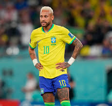

Quem é Neymar Jr?
Neymar da Silva Santos Júnior (Mogi das Cruzes, 5 de fevereiro de 1992) é um futebolista brasileiro que atua como atacante. Atualmente joga no Al-Hilal, da Arábia Saudita. Revelado pelo Santos em 2009, desde cedo correspondeu às expectativas e conquistou diversos títulos com o clube, incluindo dois Campeonatos Paulistas seguidos, uma Copa do Brasil e uma Libertadores, sendo esta a primeira do Peixe desde 1963. Ganhou por duas vezes seguidas o prêmio de melhor jogador sul-americano do ano, em 2011 e 2012, e um prêmio Puskás de gol mais bonito do ano em 2011. Em 2013, após ser protagonista no título da Copa das Confederações pela Seleção Brasileira, Neymar foi vendido ao Barcelona numa transação que é considerada a venda mais cara da história do futebol brasileiro. Na sua segunda temporada pelo clube espanhol, o jogador estrelou um brilhante trio de ataque conhecido como "MSN", ao lado dos também sul-americanos Lionel Messi e Luis Suárez. Juntos, faturaram a tríplice coroa e ajudaram o Barça a conquistar a La Liga, a Copa do Rei e Liga dos Campeões da UEFA, com Neymar sendo decisivo e terminando como um dos artilheiros da Champions. Além disso, o brasileiro consagrou-se como um dos melhores do mundo e foi finalista da Bola de Ouro da FIFA. Em 2017, com sua venda milionária ao Paris Saint-Germain por 222 milhões de euros, tornou-se a transferência mais cara da história do futebol. Nesse mesmo ano, foi pela segunda vez na carreira um dos três finalistas da premiação da FIFA de melhor jogador do mundo, desta vez nomeada The Best FIFA Football Awards. Na sua terceira temporada em Paris, Neymar ajudou o PSG a chegar a sua primeira final de Liga dos Campeões, em que perderam para o Bayern de Munique. O atacante é o jogador brasileiro com mais gols por essa competição desde 2018, quando superou Kaká. Pela Seleção Brasileira, Neymar estreou em 2010, aos 18 anos, e em 2023 superou Pelé para tornar-se o maior artilheiro da Amarelinha segundo a contagem da FIFA.s Principal nome do time que disputou a Copa do Mundo de 2014, o atacante marcou quatro gols em cinco partidas, mas sofreu uma grave lesão na coluna durante as quartas de final contra a Colômbia, o que o afastou da competição. No ano anterior havia conquistado o título da Copa das Confederações, sendo a principal estrela brasileira durante os cinco jogos da campanha, onde fez quatro gols e deu três assistências, tendo, inclusive, levado o prêmio de melhor jogador da competição e ainda a Chuteira de Bronze. Participou ainda das Copas do Mundo de 2018 e 2022, tendo marcado dois gols em ambas, mas sem conseguir impedir o Brasil de cair nas quartas de final. Também disputou três edições da Copa América, em 2011, 2015 e 2021, porém não conquistou a competição sul-americana. Em 2016, Neymar fez parte do elenco que ganhou o primeiro título olímpico da história da Canarinho, convertendo o pênalti que garantiu o título e saindo como herói. Fora de campo, o brasileiro é um dos atletas mais bem sucedidos do mundo; a SportsPro o nomeou como atleta mais comercializável do mundo em 2012 e 2013, e a ESPN o citou como quarto atleta mais famoso do mundo em 2016. No ano seguinte, Neymar foi incluído pela Time na lista das 100 pessoas mais influentes do mundo. Já em 2018, foi classificado pela France Football como terceiro jogador de futebol mais bem pago do mundo. A Forbes o classificou como o terceiro atleta mais bem pago do mundo em 2019, e o quarto atleta mais bem pago em 2020. Durante nove anos, Neymar foi um dos principais endossadores da empresa estadunidense de roupas esportivas Nike, até assinar com a alemã Puma em agosto de 2020.
Biografia
Infância e Juventude
Filho do mecânico Neymar da Silva Santos (de quem herdou o nome) e Nadine Santos, Neymar nasceu na cidade de Mogi das Cruzes, na Região Metropolitana de São Paulo, em 5 de fevereiro de 1992, mas ainda muito jovem mudou-se a São Vicente e em seguida a Santos. Em 2003, aos 11 anos de idade, chegou às categorias de base do Santos, donde não saiu mais até tornar-se profissional. Quando Neymar ainda não ganhava o suficiente para sustentar a família, ele, o pai, a mãe e a irmã moravam em um cômodo na casa da avó, na periferia de São Vicente. Com o dinheiro e já prevendo o sucesso do filho, a família comprou seu primeiro imóvel, um apartamento ao lado da Vila Belmiro. À medida que o adolescente crescia, o nível de vida da família melhorava. Aos 15 anos, Neymar ganhava 10 mil reais por mês. Aos 16, 25 mil. Aos 17, quando virou titular no time principal do Santos, vieram os primeiros patrocínios. Neymar é evangélico, e frequenta com sua família a Igreja Batista.
Times que passou
- Santos (Brasil)
- Barcelona (Espanha)
- Paris Saint-Germain (França)
- Al-Hilal (Arábia Saudita)
- Seleção Brasileira
Títulos e Conquistas
Santos
- Campeonato Paulista: 2010, 2011 e 2012
- Copa do Brasil: 2010
- Copa Libertadores da América: 2011
- Recopa Sul-Americana: 2012
Barcelona
- Supercopa da Espanha: 2013
- La Liga: 2014–15 e 2015–16
- Copa do Rei: 2014–15, 2015–16 e 2016–17
- Liga dos Campeões da UEFA: 2014–15
- Copa do Mundo de Clubes da FIFA: 2015
Paris Saint-Germain
- Ligue 1: 2017–18, 2018–19, 2019–20, 2021–22 e 2022–23
- Copa da França: 2017–18, 2019–20 e 2020–21
- Copa da Liga Francesa: 2017–18 e 2019–20
- Supercopa da França: 2018, 2020 e 2022
Al-Hilal
- Supercopa da Arábia Saudita: 2023
- Campeonato Saudita: 2023–24
Seleção Brasileira
- Campeonato Sul-Americano Sub-20: 2011
- Superclássico das Américas: 2011, 2012, 2014 e 2018
- Copa das Confederações FIFA: 2013
- Jogos Olímpicos: 2016
Artilharias
- Copa do Brasil de 2010 (11 gols)
- Sul-Americano Sub-20 de 2011 (9 gols)
- Campeonato Paulista de 2012 (20 gols)
- Copa Libertadores da América de 2012 (8 gols)
- Chuteira de Bronze da Copa das Confederações de 2013 (4 gols)
- Chuteira de Bronze da Copa do Mundo de 2014 (4 gols)
- Prêmio de goleador internacional mais efetivo de 2014 pel0a IFFHS (19 gols)
- Liga dos Campeões de 2014–15 (10 gols)
- Copa do Rei de 2014–15 (7 gols)
- Superclássico das Américas de 2011 (1 gol)
- Recopa Sul-Americana de 2012 (1 gol)
- CIMB Challenge Cup de 2013 (1 gol)
- Supercopa da Espanha de 2013 (1 gol)
- Troféu Joan Gamper de 2014 (2 gols)
- Troféu Joan Gamper de 2015 (1 gol)
- Supercopa da França de 2020 (1 gol)
- Supercopa da França de 2022 (2 gols)
Estatísticas da sua melhor temporada (2012)
| Competição | Jogos | Gols | Assitências |
|---|---|---|---|
| Brasileiro | 17 | 14 | 7 |
| Paulista | 16 | 20 | 3 |
| Libertadores | 12 | 8 | 4 |
| Recopa Sul-Americana | 1 | 1 | 0 |